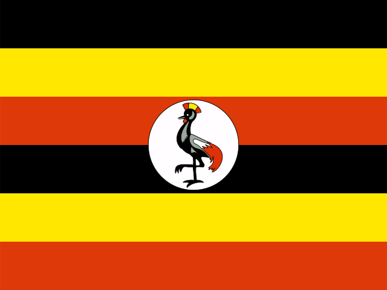

Question 191

Flag / Country🟩 Independent
Your answer: syriaCorrect: Syria
Capital🟩 Independent
Your answer: damascuaCorrect: Damascus
Language🟩 Independent
Your answer: arabicCorrect: Arabic
damascua is a recognizable phonetic spelling of Damascus.
Final Batch 20 · Q191–Q195 · 28 October 2026 · 15/15 Independent
| Score | Flags / Country | Capitals | Languages |
|---|---|---|---|
| Pure | 5/5 (100%) | 5/5 (100%) | 5/5 (100%) |
| Pure + Assisted | 5/5 (100%) | 5/5 (100%) | 5/5 (100%) |
| Independent | 5 | 5 | 5 |
| Assisted | 0 | 0 | 0 |
| Wrong | 0 | 0 | 0 |
| Cancelled | 0 | 0 | 0 |
| Score | Flags / Country | Capitals | Languages |
|---|---|---|---|
| Pure | 195/195 (100%) | 195/195 (100%) | 195/195 (100%) |
| Pure + Assisted | 195/195 (100%) | 195/195 (100%) | 195/195 (100%) |
| Independent | 195 | 195 | 195 |
| Assisted | 0 | 0 | 0 |
| Wrong | 0 | 0 | 0 |
| Cancelled | 0 | 0 | 0 |
damascua is a recognizable phonetic spelling of Damascus.

rosseau is a recognizable Roseau spelling.

niamy is a recognizable spelling of Niamey; English is a qualifying working language in the edition's canonical list.

Correct independently.

Correct independently.
| Q | Your Country | Correct Country | Flag | Your Capital | Correct Capital | Capital | Your Language | Correct Language(s) | Language |
|---|---|---|---|---|---|---|---|---|---|
| 191 | syria | Syria | 🟩 Independent | damascua | Damascus | 🟩 Independent | arabic | Arabic | 🟩 Independent |
| 192 | dominica | Dominica | 🟩 Independent | rosseau | Roseau | 🟩 Independent | english | English | 🟩 Independent |
| 193 | niger | Niger | 🟩 Independent | niamy | Niamey | 🟩 Independent | english | Hausa (national); French; English (working) | 🟩 Independent |
| 194 | senegal | Senegal | 🟩 Independent | dakar | Dakar | 🟩 Independent | french | French (official); Wolof (spoken) | 🟩 Independent |
| 195 | uganda | Uganda | 🟩 Independent | kampala | Kampala | 🟩 Independent | english | English; Swahili | 🟩 Independent |
All 15 final components independently correct with no clues. Phonetic capital spellings accepted; Niger's English qualifies under the canonical working-language rule. Edition 2 is finished; no next batch.
195 / 195 countries — COMPLETE · 20 of 20 batches finished · 0 remaining
PERFECT 585/585 Combined Pure: Flags 195/195; Capitals 195/195; Languages 195/195. Independent 585 · Assisted 0 · Wrong 0 · Cancelled 0.